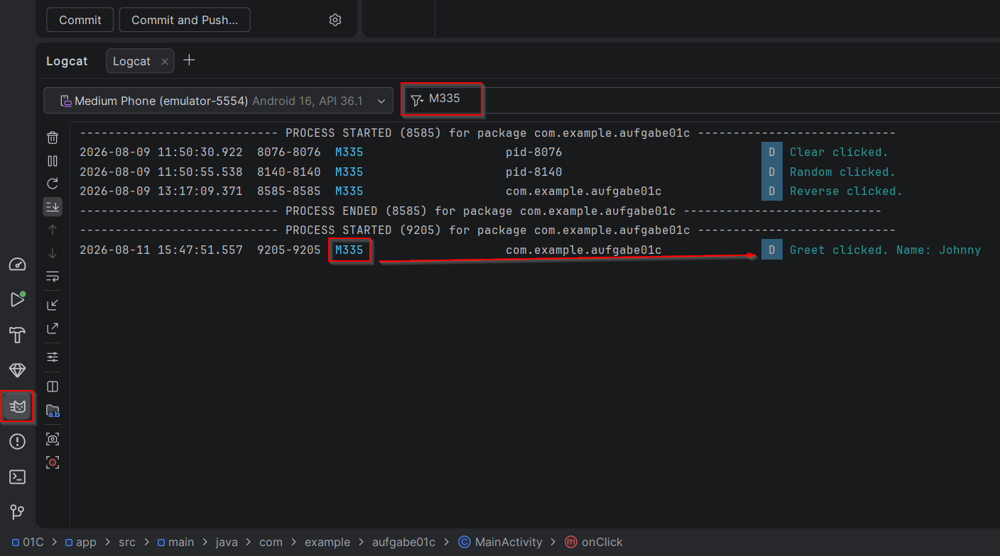

Modul 335 Mobile Applikationen, Tag 1 Vormittag. Zeitbudget 65 Minuten, dazu 13 Minuten Einführung durch die Lehrperson.
findViewById und den Weg vom Layout zum Code.Du gibst nichts ab. Deine Notizen gehören dir. Du führst sie in deinem eigenen Heft oder in einer Datei. Vergleich sie danach mit dem Lösungsmaterial.
Fertig bist du, wenn das stimmt:
Mach einen Screenshot für dich selbst. Deine laufende App, im Eingabefeld dein eigener Name, darunter die Ausgabe.
Dazu der 01C Wissenscheck. Er ist unbenotet und beliebig wiederholbar.
Warum du dieselbe App zweimal baust. Das ist keine Schikane. Beide Bauformen begegnen dir später wieder, in fremdem Code, in Anleitungen im Netz und in KI-Antworten. Wer nur eine kennt, versteht die andere nicht und baut sie im Zweifel falsch nach. Wer beide gebaut hat, entscheidet selbst und kann die Entscheidung begründen. Genau das wird in der Leistungsbeurteilung verlangt.
MainActivity steht bereits ein Listener mit Pfeil. Den schauen wir uns jetzt genauer an.Log.d und Toast kurz zeigen, dazu den Filter im Logcat.Bisher lief deine App einmal durch und blieb dann stehen. Eine echte App wartet. Sie wartet darauf, dass jemand tippt, wischt oder klickt.
In diesem Block baust du deine erste App, die auf den Benutzer reagiert. Und du baust sie zweimal, auf zwei verschiedene Arten. Am Schluss entscheidest du selbst, welche dir besser gefällt.
Das sind alle Bausteine, die du für diesen Auftrag brauchst. Mehr nicht. Alles andere kommt später.
Welche Angaben Pflicht sind:
| Angabe | Pflicht bei | Bemerkung |
|---|---|---|
| android:id | jedem Element, das du im Code ansprichst | Ohne id findet findViewById nichts |
| .show() | jedem Toast | makeText baut ihn nur, erst .show() zeigt ihn an |
| TAG | jedem Log.d | Im ganzen Modul "M335", als Konstante in der Klasse |
| Reihenfolge im Code | immer | setContentView zuerst, danach erst findViewById. Siehe 01B |
Im Modul 335 gilt eine feste Regel. Der Klassenname des Controls bestimmt das Präfix.
TextView wird tv, EditText wird et, ImageView wird iv.Button wird btn.etName, tvOutput, btnGreet.Bezeichner und Log-Meldungen sind englisch, sichtbare Texte deutsch. Also btnGreet mit der Beschriftung "Begrüssen".
Denk kurz darüber nach, bevor du anfängst. Aufschreiben musst du nichts davon. Die Fragen kommen im Wissenscheck wieder, dort bekommst du sofort eine Rückmeldung.
onCreate?1.1Neues Projekt anlegen.
| Vorlage | Empty Views Activity |
| Name | M335 Buttons |
| Paket | ch.wiss.m335.buttons |
| Sprache | Java |
| Minimum SDK | API 26 |
| Build configuration language | Kotlin DSL (build.gradle.kts) |
Warte, bis unten in der Statusleiste kein Fortschrittsbalken mehr läuft. Fang nicht vorher an zu tippen.
1.2Das Layout einsetzen.
Öffne app / res / layout / activity_main.xml und wechsle oben rechts auf die Ansicht Code. Ersetze den gesamten Inhalt der Datei durch den Code unten.
<?xml version="1.0" encoding="utf-8"?> <androidx.constraintlayout.widget.ConstraintLayout xmlns:android="http://schemas.android.com/apk/res/android" xmlns:app="http://schemas.android.com/apk/res-auto" xmlns:tools="http://schemas.android.com/tools" android:id="@+id/main" android:layout_width="match_parent" android:layout_height="match_parent" tools:context=".MainActivity"> <LinearLayout android:layout_width="0dp" android:layout_height="wrap_content" android:orientation="vertical" android:padding="16dp" app:layout_constraintTop_toTopOf="parent" app:layout_constraintStart_toStartOf="parent" app:layout_constraintEnd_toEndOf="parent"> <EditText android:id="@+id/etName" android:layout_width="match_parent" android:layout_height="wrap_content" android:hint="Dein Name" android:inputType="textPersonName" /> <Button android:id="@+id/btnGreet" android:layout_width="match_parent" android:layout_height="wrap_content" android:text="Begrüssen" /> <Button android:id="@+id/btnCount" android:layout_width="match_parent" android:layout_height="wrap_content" android:text="Zeichen zählen" /> <Button android:id="@+id/btnClear" android:layout_width="match_parent" android:layout_height="wrap_content" android:text="Löschen" /> <TextView android:id="@+id/tvOutput" android:layout_width="match_parent" android:layout_height="wrap_content" android:layout_marginTop="24dp" android:textSize="18sp" /> </LinearLayout> </androidx.constraintlayout.widget.ConstraintLayout>
Starte die App einmal. Es passiert noch nichts, aber alle fünf Elemente müssen sichtbar sein.
Android Studio zeigt gelbe Warnungen an. Das ist richtig so. Die Texte stehen direkt im Layout, und dem Eingabefeld fehlt ein Autofill-Hinweis. Gelb bedeutet Hinweis, rot bedeutet Fehler. Nur rot musst du beheben.
Das Layout verstehst du heute noch nicht, und das ist in Ordnung. Warum es so aufgebaut ist und was ConstraintLayout, 0dp und die app:layout_constraint-Zeilen bedeuten, lernst du heute Nachmittag in Block 02. Heute geht es nur darum, dass die Buttons etwas tun.
So prüfst du Teil 1.
Öffne MainActivity.java. Lösch nichts von dem, was schon da steht.
2.1Ein Tag für deine Log-Meldungen.
Ergänze über der Methode onCreate ein Klassenattribut:
private static final String TAG = "M335";
Der Tag ist ein frei wählbarer Text. Er kennzeichnet deine eigenen Meldungen, damit du sie später im Logcat wiederfindest. Im ganzen Modul benutzen wir M335.
| Baustein | Wofür | So sieht er aus |
|---|---|---|
| findViewById | Holt dir ein Element aus dem Layout in den Code | Button btn = findViewById(R.id.btnGreet); |
| setOnClickListener | Sagt einem Button, wen er benachrichtigen soll | btn.setOnClickListener(v -> { ... }); |
| getText().toString() | Liest den Inhalt eines Eingabefelds als Text | String s = etName.getText().toString(); |
| setText | Schreibt Text in eine TextView oder ein EditText | tvOutput.setText("Hallo"); |
| Log.d | Schreibt eine Meldung ins Logcat, nur für dich | Log.d(TAG, "Greet clicked."); |
| Toast.makeText | Zeigt dem Benutzer kurz eine Meldung an | Toast.makeText(this, "Hallo", Toast.LENGTH_LONG).show(); |
2.2Der Button bekommt einen Zuhörer.
Ergänze am Ende der Methode onCreate, also nach dem bestehenden Block mit dem Pfeil:
EditText etName = findViewById(R.id.etName); TextView tvOutput = findViewById(R.id.tvOutput); Button btnGreet = findViewById(R.id.btnGreet); btnGreet.setOnClickListener(v -> { String name = etName.getText().toString(); Log.d(TAG, "Greet clicked. Name: " + name); tvOutput.setText("Hallo " + name + "!"); Toast.makeText(this, "Hallo " + name + "!", Toast.LENGTH_LONG).show(); });
Mehrere Stellen sind rot unterkringelt. Das ist richtig so. Die Imports fehlen. Klick in das rote Wort und drück Alt und Enter, dann Import class. Das machst du fünfmal: für EditText, TextView, Button, Log und Toast.
2.3Starten.
Drück Run. Gib deinen Namen ein und drück Begrüssen. Mach einen Screenshot.
2.4Deine Meldung im Logcat finden.
Öffne unten den Reiter Logcat. Tipp oben in das Suchfeld M335. Jetzt siehst du nur noch deine eigenen Meldungen. Klick mehrmals auf Begrüssen und schau zu, wie die Zeilen erscheinen.

Schreib eine dieser Zeilen auf dein Notizblatt ab.
Der Filter auf den Tag ist Gold wert. Ohne ihn ersaufen deine Meldungen in tausenden Systemmeldungen. Du brauchst ihn in jedem weiteren Block.
So prüfst du Teil 2.
| Baustein | Wofür | So sieht er aus |
|---|---|---|
| length() | Gibt die Anzahl Zeichen eines Strings zurück | name.length() |
3.1Ergänzen, immer noch am Ende von onCreate.
Button btnCount = findViewById(R.id.btnCount); btnCount.setOnClickListener(v -> { String name = etName.getText().toString(); Log.d(TAG, "Count clicked."); tvOutput.setText("Dein Name hat " + name.length() + " Zeichen."); }); Button btnClear = findViewById(R.id.btnClear); btnClear.setOnClickListener(v -> { Log.d(TAG, "Clear clicked."); etName.setText(""); tvOutput.setText(""); });
Starte und probier alle drei Buttons aus.
Schau dir jetzt deine onCreate-Methode an. Sie ist lang geworden. Drei Blöcke, die fast gleich aussehen. Stell dir dasselbe mit zwanzig Buttons vor. Genau da setzt Teil 4 an.
So prüfst du Teil 3.
Es geht auch anders. Statt für jeden Button einen eigenen Block zu schreiben, kann die Activity selbst der Zuhörer sein.
4.1Die Klasse wird zum Zuhörer.
public class MainActivity extends AppCompatActivity implements View.OnClickListener {
Android Studio meckert sofort, weil eine Methode fehlt. Drück Alt und Enter und wähle Implement methods. Es entsteht eine leere Methode onClick.
Beim Import fragt Android Studio nach, weil es zwei Interfaces mit dem Namen OnClickListener gibt. Wähle android.view.View.OnClickListener.
4.2Die drei Listener-Blöcke ersetzen.
Lösch deine drei Listener-Blöcke aus onCreate. Ersetz sie durch:
etName = findViewById(R.id.etName); tvOutput = findViewById(R.id.tvOutput); findViewById(R.id.btnGreet).setOnClickListener(this); findViewById(R.id.btnCount).setOnClickListener(this); findViewById(R.id.btnClear).setOnClickListener(this);
Jetzt hast du ein Problem. etName und tvOutput sind rot. Finde selbst heraus warum, bevor du weiterliest. Tipp: Wo stehen die beiden jetzt, und wo werden sie gleich gebraucht?
Schreib deine Antwort auf das Notizblatt, bevor du Schritt 4.3 liest. Auch dann, wenn du nicht sicher bist.
4.3Die Erklärung.
Die Methode onClick steht ausserhalb von onCreate. Lokale Variablen aus onCreate kennt sie nicht. Eine lokale Variable lebt nur in ihrer eigenen Methode.
Die beiden müssen also Klassenattribute werden. Ergänze oben in der Klasse, dort wo auch TAG steht:
private EditText etName; private TextView tvOutput;
Achte genau darauf. In onCreate steht jetzt keine Typangabe mehr vor den zwei Zuweisungen. Also etName = findViewById(...) und nicht EditText etName = findViewById(...). Sonst entstehen dort neue lokale Variablen, die Klassenattribute bleiben leer, und die App stürzt beim ersten Klick ab.
4.4Die onClick-Methode füllen.
int id = v.getId(); String name = etName.getText().toString(); if (id == R.id.btnGreet) { Log.d(TAG, "Greet clicked. Name: " + name); tvOutput.setText("Hallo " + name + "!"); Toast.makeText(this, "Hallo " + name + "!", Toast.LENGTH_LONG).show(); } else if (id == R.id.btnCount) { Log.d(TAG, "Count clicked."); tvOutput.setText("Dein Name hat " + name.length() + " Zeichen."); } else if (id == R.id.btnClear) { Log.d(TAG, "Clear clicked."); etName.setText(""); tvOutput.setText(""); }
4.5Starten.
Die App muss sich jetzt genau gleich verhalten wie vorher. Von aussen sieht man keinen Unterschied.
Hinweis zu Fundstücken aus dem Internet. Viele Anleitungen und auch KI-Antworten benutzen an dieser Stelle ein switch statt if und else. Das funktioniert in einem App-Modul noch, bricht aber, sobald der Code in ein Library-Modul wandert, weil die Ressourcen-IDs dort keine Konstanten mehr sind. Google empfiehlt deshalb seit Jahren if und else. Wenn dir jemand switch vorschlägt, weisst du jetzt, warum wir es anders machen.
So prüfst du Teil 4.
onCreate stehen nur noch fünf Zeilen für die Buttons.onClick.Du hast dieselbe App zweimal gebaut. Jetzt entscheidest du.
5.1Ein Versuch.
Meld in onCreate einen vierten Button an, den es gar nicht gibt, oder lass in onClick einen Zweig weg. Probier aus, was passiert. Notier es in einem Satz.
5.2Die Tabelle auf dem Notizblatt ausfüllen.
Trag für beide Varianten je einen Vorteil und einen Nachteil ein. In deinen eigenen Worten, nicht abgeschrieben.
Und beantworte die eine Frage darunter: Welche Variante würdest du bei zwanzig Buttons wählen? Begründe in zwei Sätzen.
So prüfst du Teil 5.
Zum Vergleichen. Das fertige Projekt, beide Codevarianten, die Antworten zu den Denkfragen und die Lösungen der Übungen findest du im Classroom-Material 01C Lösung - Buttons und Events. Schau erst hinein, wenn du selbst fertig bist oder wirklich nicht weiterkommst.
Diese drei löst du mit dem, was du eben gelernt hast. Kein neuer Stoff.
Übung 1, eine Zeile mehr im Log
Beim Klick auf Begrüssen soll zusätzlich im Logcat stehen, wie viele Zeichen der Name hat. Ohne dass sich die Anzeige auf dem Bildschirm ändert.
So prüfst du: Im Logcat steht eine Zeile mehr als vorher, auf dem Bildschirm sieht alles gleich aus.
Übung 2, der Toast wird kürzer
Ändere den Toast so, dass er nur halb so lange sichtbar ist.
So prüfst du: Der Toast verschwindet sichtbar schneller. Und du kannst sagen, wie viele Werte es dafür überhaupt gibt.
Übung 3, erklären
Erkläre einem Lerngspänli in eigenen Worten, warum etName in Variante 2 ein Klassenattribut sein muss, in Variante 1 aber nicht.
So prüfst du: Dein Gegenüber kann danach selbst sagen, wo eine lokale Variable lebt und wo nicht.
Eine vierte Übung gehört zur Hausaufgabe 1. Füge einen vierten Button "Umdrehen" hinzu, der den eingegebenen Namen rückwärts anzeigt. So prüfst du: aus "Anna" wird "annA". Im Block reicht die Zeit dafür nicht.
Zuerst die Pflichtaufgabe fertig und lauffähig. Dann erst hier weiter.
Auftrag: Probier aus, was passiert, wenn das Eingabefeld leer ist. Drück Begrüssen und dann Zeichen zählen. Beschreib, was du siehst. Überleg dir danach, wie sich die App verhalten müsste, damit es sich richtig anfühlt, und bau eine Lösung dafür.
Und die Frage, die dazugehört: Woher weiss das Programm überhaupt, dass das Feld leer ist? Was genau prüfst du, und was liefert dir das Feld in diesem Fall zurück?
Keine Musterlösung. Auch nicht im Lösungsmaterial. KI darfst du benutzen, aber du musst deine Lösung erklären können.
| Das siehst du | Ursache | Das machst du |
|---|---|---|
Die App stürzt beim Start ab, im Logcat steht NullPointerException bei setOnClickListener | Eine id im Code stimmt nicht mit dem XML überein. findViewById hat nichts gefunden und null geliefert | Drei-Schritte-Regel aus 01B anwenden. Dann die id im XML mit der im Code vergleichen, Buchstabe für Buchstabe |
| Die App stürzt beim ersten Klick ab, nicht beim Start | Teil 4: Du hast die Typangabe in onCreate stehen lassen. Das Klassenattribut ist leer geblieben | In onCreate die Typangabe vor etName und tvOutput entfernen |
R.id.etName bleibt rot, obwohl die id im XML steht | Die R-Klasse wurde noch nicht neu erzeugt | Menü Build, dann Rebuild Project. Danach warten, bis die Statusleiste leer ist |
| Alt und Enter bietet keinen Import an | Der Cursor steht nicht im roten Wort | Klick mitten in das rote Wort, dann Alt und Enter |
Beim Import von OnClickListener erscheint eine Auswahl | Es gibt zwei Interfaces mit diesem Namen | android.view.View.OnClickListener wählen |
| Ein Button reagiert gar nicht, ohne Fehler und ohne Absturz | Teil 4: Der Button ist angemeldet, kommt aber in onClick nicht vor | In onClick den fehlenden Zweig ergänzen. Genau das ist der Versuch aus 5.1 |
| Im Logcat siehst du deine Meldungen nicht | Der Filter fehlt oder der Tag ist falsch geschrieben | Im Suchfeld des Logcat M335 eintippen. Prüfen, ob TAG im Code wirklich "M335" ist |
| Der Toast erscheint nicht | .show() am Ende vergessen | Toast.makeText(...) baut den Toast nur. Erst .show() zeigt ihn an |
Nach dem Umbau in Teil 4 fehlt die Methode onClick | Implement methods wurde nicht ausgeführt | Cursor in den Klassennamen, Alt und Enter, dann Implement methods |
| Der Text im Ausgabefeld ändert sich nicht mehr | Der Zweig in onClick trifft nicht zu, weil die id nicht stimmt | Mit Log.d am Anfang von onClick prüfen, ob die Methode überhaupt aufgerufen wird |
Das hier ersetzt das frühere Arbeitsblatt. Du füllst es nicht in Google Classroom aus, sondern in deinem eigenen Heft, in einer Textdatei oder auf einem Ausdruck dieser Seite. Es gehört dir, und es wird nicht eingesammelt.
Warum du es trotzdem führst. Was du selbst aufschreibst, bleibt. Und am Prüfungstag hast du keine Anleitung, sondern nur das, was du geübt hast.
Nach Schritt 2.4. Schreib eine Zeile aus deinem Logcat ab, so wie sie bei dir steht, mit deinem eigenen Namen darin.
Das hier ist der wichtigste Teil dieses Auftrags. Nach Schritt 4.2 werden etName und tvOutput rot.
Schreib deine Antwort hier hin, bevor du Schritt 4.3 liest. Auch dann, wenn du nicht sicher bist. Eine falsche eigene Antwort ist hier mehr wert als eine richtige abgeschriebene.
| Frage | Deine Antwort |
|---|---|
Warum sind etName und tvOutput nach Schritt 4.2 rot? Meine Vermutung, vor dem Weiterlesen | |
| Nachdem ich 4.3 gelesen habe: was war an meiner Vermutung richtig, was nicht? |
Du hast dieselbe App zweimal gebaut. Trag zu beiden Varianten je einen Vorteil und einen Nachteil ein, in deinen eigenen Worten.
| Variante | Ein Vorteil | Ein Nachteil |
|---|---|---|
| Variante 1, ein Listener pro Button mit Pfeil | ||
| Variante 2, die Activity ist selbst der Zuhörer |
| Frage | Deine Antwort |
|---|---|
| Welche Variante würdest du bei zwanzig Buttons wählen? Begründe in zwei Sätzen | |
Aus 5.1: du hast einen Button angemeldet und den Zweig in onClick weggelassen. Was ist passiert? Ein Satz |
| Nr. | Was das Bild zeigen muss | Dateiname |
|---|---|---|
| 1 | Deine laufende App. Im Eingabefeld steht dein eigener Name, darunter die Ausgabe Hallo DEIN NAME |
Trag ein, was du geändert hast. Ein bis zwei Zeilen genügen.
| Übung | Was ich geändert habe |
|---|---|
| 1, eine Zeile mehr im Log | |
| 2, der Toast wird kürzer. Wie viele Werte gibt es dafür? | |
| 3, erklären. Wem hast du es erklärt? |
Das Wichtigste aus diesem Auftrag, zum Nachschlagen.
| HANOK | Ziel |
|---|---|
| 3.1 | Kennt die Bedienung und den Einsatz einer passenden Entwicklungs-, Simulations- und Testumgebung |
| 3.2 | Kennt ein gängiges Framework und dessen APIs |
Nach diesem Auftrag kannst du:
| Zeitbudget | 65 Minuten. Denkfragen 2, Teil 1 5, Teil 2 20, Teil 3 8, Teil 4 18, Teil 5 5, Übungen 7. Dazu 13 Minuten Einführung durch die Lehrperson davor |
|---|---|
| Sozialform | Einzel- oder Partnerarbeit. Übung 3 zu zweit |
| Aufgabenart | Praktische Umsetzung mit einer Entdeckungsstelle (4.2 gegen 4.3) |
| Voraussetzung | Block 01B abgeschlossen |
| KI | In Teil 1 bis 5 nicht erlaubt. Bei den Übungen und der Zusatzaufgabe erlaubt |
| Abgabe | keine. Der Wissenscheck des Halbtags genügt |
| Name | Typ | Einstellung |
|---|---|---|
| 01C Auftrag - Buttons und Events | Material | Schüler können Datei ansehen. Das ist dieses Dokument. Das Notizblatt steht darin |
| 01C Wissenscheck - Buttons und Events | Aufgabe mit Quiz | Unbenotet, beliebig oft wiederholbar. Sieben Fragen |
| 01C Lösung - Buttons und Events | Material | Schüler können Datei ansehen. Enthält den vollständigen Code als Text und die Vergleichsliste |
| Art | Was |
|---|---|
| Hardware | Eigenes Notebook, laufender Emulator Medium Phone API 36.1 |
| Software und Tools | Android Studio Quail 2 Patch 1, Google Classroom |
| Dokumente | Dieses Dokument, mit dem Notizblatt am Schluss von Abschnitt 02 |
| Buch | Android-Apps entwickeln für Einsteiger (Rheinwerk), Kapitel 4.4 Buttons |
Modul 335 | Tag 1 Vormittag | Auftrag 01C | Version 5 | 11.08.2026